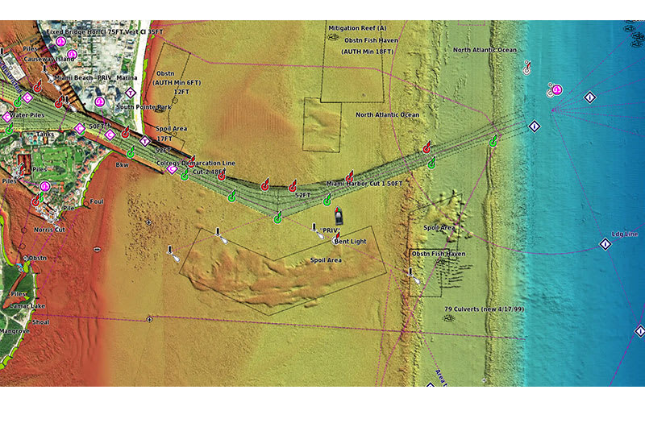
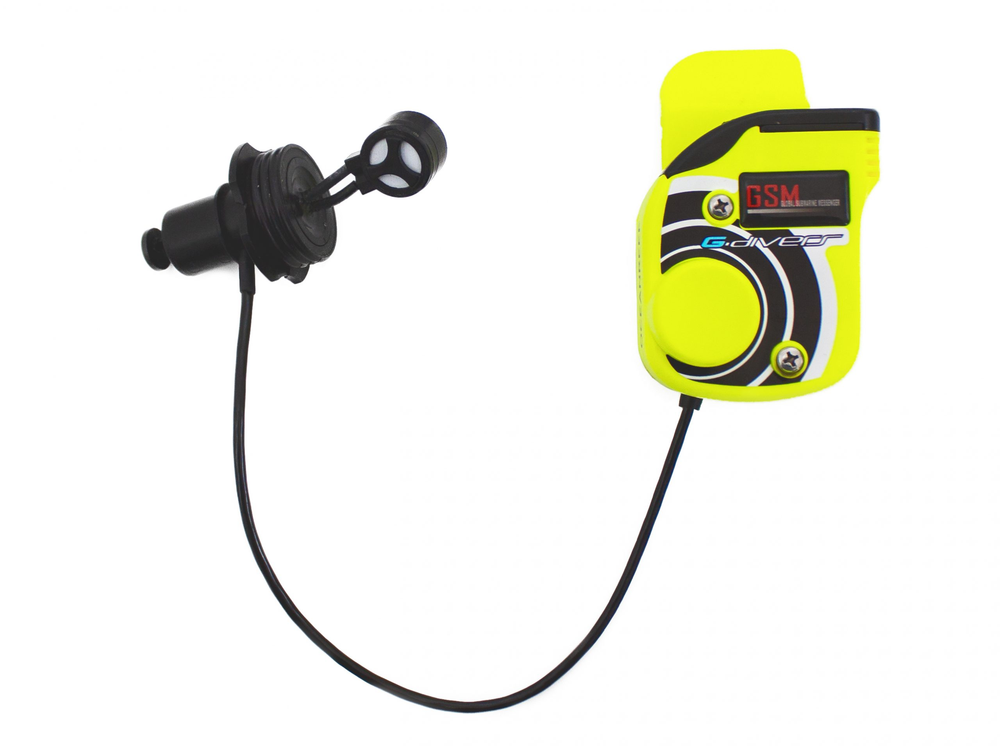

◎
Un centro de buceo
desde el principio.
Evaluamos el entorno subacuático de tu resort y te asesoramos para dar forma a un centro de buceo: zonas de interés, equipamiento, costes y equipo humano.
Diseña tu proyecto ↗BLUE QUEST / EXPLORACIÓN SUBACUÁTICA
Exploramos el océano para descubrir nuevas posibilidades de buceo. Transformamos el potencial de un lugar en el futuro de tu centro.
Nuevos puntos de buceo.
Decisiones con información.
Un océano de posibilidades.
01 / NUESTRO ENFOQUE
Acompañamos a quienes quieren empezar y a quienes quieren llegar más lejos. Cada proyecto comienza por conocer lo que hay bajo el agua.
Evaluamos el entorno subacuático de tu resort y te asesoramos para dar forma a un centro de buceo: zonas de interés, equipamiento, costes y equipo humano.
Diseña tu proyecto ↗Exploramos tu zona para localizar y documentar nuevos puntos de buceo recreativo con los que ampliar las experiencias de tus clientes.
Descubre nuestras expediciones ↗Exploración para la búsqueda, localización y recuperación de objetos o embarcaciones hundidas, con un alcance definido según las condiciones de cada operación.
Conoce nuestra tecnología ↗02 / ATLAS DE EXPLORACIÓN
De los atolones del Índico a las islas del Atlántico. Consulta los destinos explorados y nuestras próximas prospecciones.
Ubicaciones de referencia de los destinos; no indican puntos de inmersión.
03 / TECNOLOGÍA DE CAMPO
Herramientas para observar, medir y documentar el entorno subacuático. Selecciona cada sistema para explorar sus imágenes y su función.


CARTOGRAFÍA BATIMÉTRICA
Relieve sombreado con información cartográfica. Ejemplo del fabricante, no una carta para navegar.
Garmin Navionics Vision+. Cartografía con relieve sombreado, detalles del fondo y vistas complementarias de satélite y sonar. Cambia de vista en la imagen para compararlas. La disponibilidad depende de la zona y del producto contratado.
Garmin LiveScope XR. Ejemplo de sonar de exploración en tiempo real: permite observar la estructura del fondo y posibles objetivos, incluso cuando la visibilidad limita la observación directa.
DJI Osmo 360 II. Captura panorámica para documentar el entorno y crear recorridos inmersivos. La captura 360° es distinta de la reconstrucción tridimensional; el uso subacuático requiere una configuración adecuada al equipo y a la inmersión.
Waydoo Subnado Plus Twin Engine. Configuración de dos propulsores con empuñadura doble para recorrer zonas de prospección y apoyar el desplazamiento del equipo.
Ocean Reef Neptune II + GSM G.Divers. Máscara integral y unidad de comunicación subacuática. Se muestran por separado para identificar ambos componentes; la comunicación con superficie requiere una estación compatible.
04 / ASESORAMIENTO INTEGRAL
Asesoramos a empresas y profesionales que quieren crear un centro de buceo. Desde elegir una oportunidad en el mapa hasta definir qué hace falta para ponerla en marcha.
Identificación de zonas del mundo con potencial para tu proyecto y análisis de su contexto.
Orientación sobre inversión inicial y necesidades operativas según el alcance del centro.
Selección del equipamiento necesario para el servicio de buceo y la operación prevista.
Definición de perfiles, funciones y necesidades de personal para la actividad.